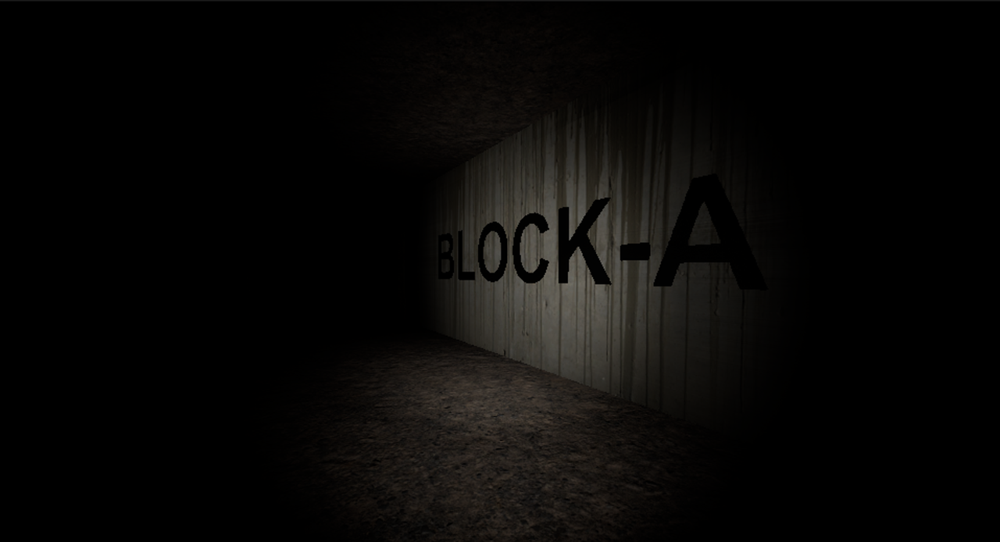
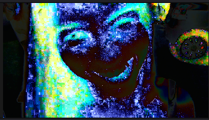
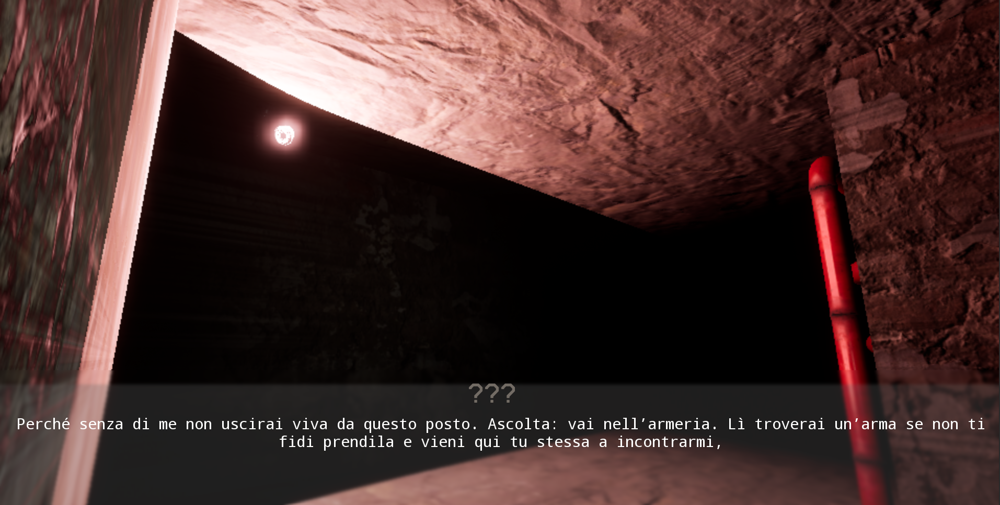
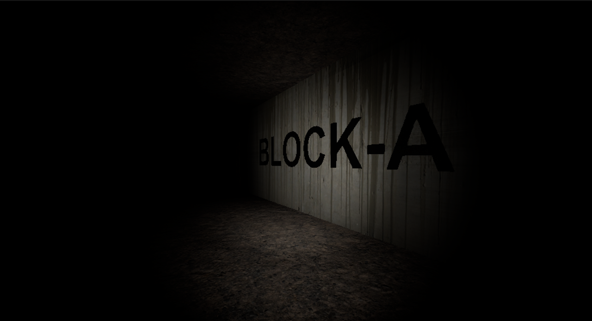
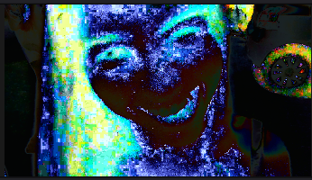
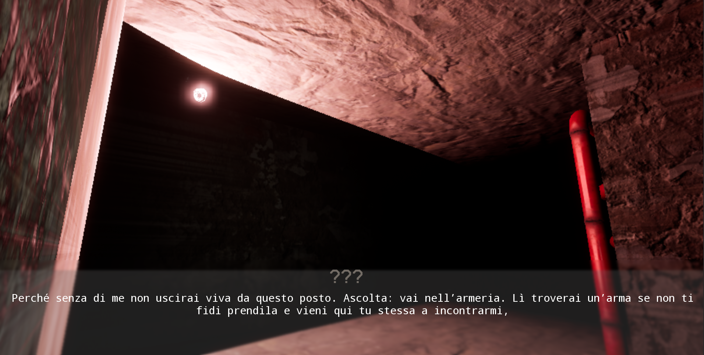
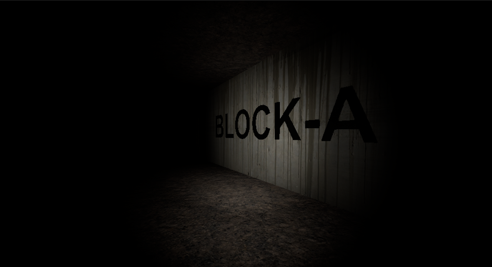
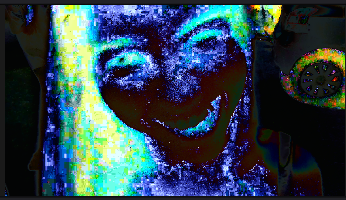
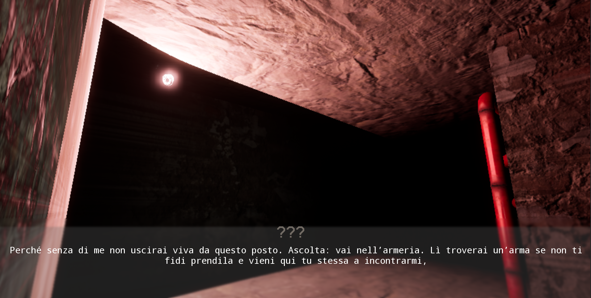

Screenshot e immagini
 





Un horror psicologico che unisce mistero e atmosfera immersiva. È il 12/09/2016. Emily Yelter sparisce all’interno di una misteriosa casa nel mezzo di un bosco. Nessuno sa dove sia finita. Emily è stata rinchiusa all’interno della casa di Valter, una creatura demoniaca che ora la tiene prigioniera. Dovrà affrontare numerosi livelli e capitoli per trovare la via di fuga, prima che sia troppo tardi.
La beta di The valter house sara disponibile a breve. non perderti i prossimi update
Genere: Horror
Piattaforme: PC/Windows
made in: UNREAL ENGINE 5.5
Ambienti liminali e claustrofobici, la storia è ambientata in una cantina divise in zone spazzi piccoli e angusti
Puzzle ambientali e narrativi che intrecciano storia e gameplay. dovreai capite tu come risolvere gli emigmi e andare avanti
Una storia ricca di misteri e simbolismi, da ricostruire pezzo per pezzo.
ogni capitolo del gioco porta il titolo di un brano di deversi generi che variano dal nu metal all pop e al rep



Il Vecio appare come un uomo anziano di circa 70 anni. I pochi dati riscontrati dall’A.R.C. dimostrano che possiede un notevole istinto per la caccia e per l’ottenimento delle sue prede. Le immagini ottenute lo mostrano mentre attacca i viandanti con armi bianche artigianali, come coltelli, tegole e, a volte, persino pugnali. Una volta ottenuta una presa sufficiente su una sua preda, la spinge verso il muro; da lì, un liquido nero e denso apparirà sulla superficie, facendo sparire il viandante e il Vecio all’interno. Nessuno, al momento dell’aggiornamento [16/07/2016], è stato più ritrovato. L’A.R.C. sta organizzando pattuglie per cercare di salvare l’ultima vittima.